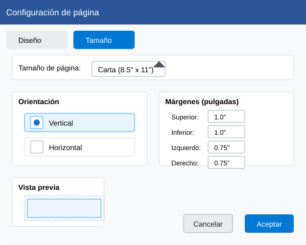

Sesión 6: Diseño de Página
Aprende a diseñar páginas profesionales y atractivas en Publisher
Objetivos de aprendizaje
- Configurar páginas y diseño de documentos
- Utilizar guías y reglas para un diseño preciso
- Trabajar con capas y orden de objetos
- Crear diseños equilibrados y profesionales
1. Configuración de página
La configuración adecuada de la página es fundamental para cualquier diseño profesional.
Para configurar la página:
- Ve a la pestaña Diseño de página
- Configura el tamaño de página (A4, Carta, etc.)
- Establece los márgenes y la orientación
- Define las columnas y guías de diseño

2. Herramientas de diseño
Publisher ofrece diversas herramientas para ayudarte a crear diseños profesionales.
Guías y reglas
Organiza tu espacio de trabajo:
Organización de objetos
Controla la disposición de los elementos:
3. Jerarquía visual y flujo de lectura
Crea una jerarquía clara para guiar al lector a través de tu diseño.
Elementos de jerarquía:
- Tamaño: Los elementos más grandes atraen más atención
- Color: Usa colores contrastantes para resaltar información importante
- Espaciado: Agrupa elementos relacionados
- Tipografía: Usa diferentes tamaños y pesos para títulos y contenido
4. Ejercicio práctico
Crea un boletín informativo
Sigue estos pasos para diseñar un boletín profesional:
- Crea un nuevo documento con formato de boletín
- Configura una cuadrícula de 3 columnas
- Agrega un encabezado con título y fecha
- Crea secciones claramente definidas
- Incluye imágenes y cuadros de texto
- Asegúrate de que haya suficiente espacio en blanco
💡 Consejo profesional
Usa la función Vista previa de impresión (Ctrl+Shift+I) para ver cómo se verá tu diseño antes de imprimirlo o publicarlo.
5. Plantillas y estilos
Ahorra tiempo utilizando plantillas y estilos consistentes en tus diseños.
Plantillas
Publisher incluye numerosas plantillas para diferentes tipos de publicaciones. Personalízalas según tus necesidades.
Estilos rápidos
Crea y aplica estilos consistentes para texto, formas y tablas.
Resumen
En esta sesión has aprendido a:
- Configurar correctamente las páginas en Publisher
- Utilizar guías y reglas para un diseño preciso
- Crear jerarquías visuales efectivas
- Organizar elementos de manera profesional
- Trabajar con plantillas y estilos
Auto-evaluación
Responde las siguientes preguntas para verificar tu comprensión:
- ¿Cómo puedes asegurarte de que los elementos de tu diseño estén alineados correctamente?
- ¿Por qué es importante la jerarquía visual en un diseño de página?
- ¿Cuáles son las ventajas de usar plantillas en Publisher?